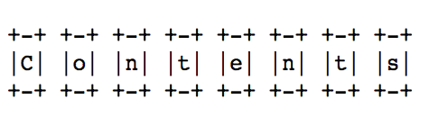
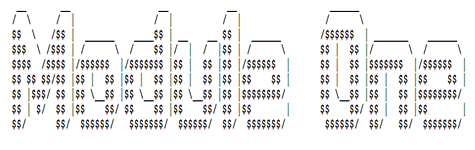
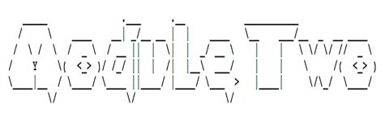
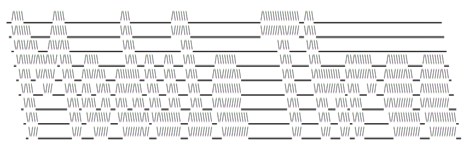
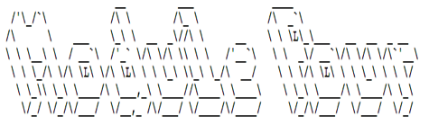

Technology is the campfire around which we tell our stories. -- Laurie Anderson
An offering in the Technology and Society minor at UVic, this course is about the entanglement of Western technologies with society and culture. We'll examine some histories of these entanglements, discuss their effects today, and also speculate about their trajectories. One important question will persist throughout the term: How can and should we intervene in technologies as practices? Rather than treating technologies as tools we use or objects we examine from the outside, we'll prototype with and through them as modes of inquiry. You'll turn patents into 3-D forms, compose and implement use scenarios, "datify" old tech, and imagine a device you want to see in the world. You'll document your research and development process along the way, reflect on what you learned, present your prototypes and findings, and also build a vocabulary of keywords for technology and society. I will not assume that you're familiar with fields such as science and technology studies, media studies, critical design, or experimental art, and the prototyping exercises will rely on low-tech approaches. Technical competency required: know how to send an email.
I'm looking forward to working with you.

We'll study work by Erin Anderson, Janine Barchas, Vannevar Bush, Jorge Luis Borges, Nicky Case, Tiffany Chan, Kate Crawford, The Extrapolation Factory, Melissa Gregg, David Giovannoni, Raiford Guins, Glenn Hendler, Vladan Joler, Ursula K. Le Guin, Alondra Nelson, Vicki Mayer, Tara McPherson, Mara Mills, Helen Morgan-Parmett, Dawn Nafus, Lisa Nakamura, Angel Nieves, Laine Nooney, Cornelia Parker, Paolo Pedercini, Alex Rivera, Daniela Rosner, Skawennati, Lisa Snyder, and Elaine Sullivan. And you'll complete four modules during the term:
- Module 1: Memory, Novelty, Obsolescence (2-D to 3-D)
- Module 2: Design + Context (Scenario)
- Module 3: Labour, Play, Control (Datification)
- Module 4: Conjecture, Change, Responsibility (Speculation)

MODULE 1: Memory, Novelty, Obsolescence (2-D to 3-D)
Technologies are entwined with the social and cultural production of memory, novelty, and obsolescence. Consider the use of search engines to recall information, the rate at which mobile devices are discarded, or how frequently software and social networks demand updates. What does history tell us about these issues, and what might we learn from prototyping technologies that were once new?
LEARNING OUTCOMES: This module focuses on:
- Conducting historical research with digitized materials: You should use an online resource such as the Canadian patents database to locate a patent for a technology that no longer exists, is no longer popular, or both. Please include the patent (or a link to it) in your log, together with (references to) other patents you considered.
- Contextualizing the production, novelty, and obsolescence of a technology: You should use historical materials such as journal and magazine articles to determine why the technology was interesting or popular (or something else) at the time and also why it was rendered obsolete. Please present this information to the class and also include it in your log.
- Integrating theories of memory and forgetting into historical research: You should determine what the technology "remembered" for people, or what it allowed them to either forget or ignore. Please present this information to the class and also include it in your log.
- Remaking a technology to better understand not only the assumptions of 2-D patents and screen-based research but also the forms and functions of a historical device: Prototype your 2-D patent in 3-D form using low-tech materials such as paper, cardboard, and glue. If possible, produce a functioning prototype (e.g., demonstrating how the mechanisms worked). Please demonstrate your prototype to the class.
- Sharing the research and prototyping process: You should document the entire prototyping process to identify the component parts of the technology, the relationships between those parts (an "exploded view diagram"), and the form of the technology itself. In your documentation, please include photographs, video, sketches, and/or audio of the research and prototyping process together with notes from the workshops, lectures, and assigned readings and video.
- Reflecting on the research and prototyping process: You should write about your patent and prototype, with an emphasis on what you learned about memory, novelty, or obsolescence (just one; not all three). Please include this written piece in your log.
KEYWORDS: black box, collection-emulation-migration, determinism-instrumentalism-positivism, failure-magic-novelty, index-icon-symbol, memory-interface-storage, new media, planned obsolescence, remediation
KEY QUESTIONS: How does input become output, and how do we access (aspects of) that process? How are old and new media preserved? What do technologies automate, store, and remember for us? What do they point to, and how? How are they made obsolete? And how are they magical?
PROTOTYPING TECHNIQUE: 2-D to 3-D Translation
M 10 SEPT: Introductions | Course Overview | Lecture: The Reading Optophone (A Case Study; see Tiffany Chan and Mara Mills) | Workshop: Logging Your Work in this Course
R 13 SEPT: Watch (before class) "First Sounds: Humanity's First Recordings of Its Own Voice" (David Giovannoni) and "When Games Went Click: The Story of Tennis for Two" (Raiford Guins, Laine Nooney, Vlad Nudin, et al.) | Form Groups (in class) | Lecture: From Inventors and Innovation to Mess and Maintenance
M 17 SEPT: Read (before class) "Society" (Glenn Hendler) and "Technology" (me) | Lecture: Beyond Tools and Instruments | Workshop: Finding and Interpreting Patents
R 20 SEPT: Read (before class) "Funes the Memorious" (Jorge Luis Borges) and "The Story of Cold Dark Matter" (Cornelia Parker and Tate) | Watch (in class) "Memex Animation: Vannevar Bush's Diagrams Made Real" (University of Sheffield) | Lecture: Re-membering the Past | Workshop: The Exploded View: Relating the Parts of Your Prototype
M 24 SEPT: Research and Develop Your First Prototype (before and during class) | Workshop: Absence, Form, and Practice in Patents
R 27 SEPT: Finish and Present Your First Prototype (before and during class)
LOG FOR MODULE 1 (10 Sept - 27 Sept): Find a patent (dated between 1850 and 1950) for a technology that no longer exists, is no longer popular, or both. Determine why it was considered to be novel during its time and why it was rendered obsolete. Also determine what the technology was expected to "remember" (automate, recall, process, and/ or compile) for people. After you've conducted this research and written down your findings in your log, use materials of your choice (e.g., paper, cardboard, plasticine, software, or CNC) to bring your technology off the page, translating your 2-D patent into a 3-D form. (Bonus points if you get [parts of] your prototype to work.) Once you've prototyped the 3-D form, use ~400 words to communicate what you learned about memory, novelty, or obsolescence (pick one) from the prototyping process. Be sure to log your reading, research, and prototyping as you progress through the module (from 10 Sept to 27 Sept). Include in the log some documentation of the research and prototyping processes (e.g., photographs, sketches, audio, and/or video) as well as notes from the workshops, lectures, and assigned readings and video.
^^^ top of page ^^^

MODULE 2: Design + Context (Scenarios)
Design is much, much more than adding a layer of polish to a technology or form. It is a means of experimentation and critique, and it contextualizes technology's development and use. While a lot of popular design is now associated with templates, filters, skins, and bundles of files, this module foregrounds it as a scenario, which can be scripted, implemented, and integrated into social and cultural work.
LEARNING OUTCOMES: This module focuses on:
- Identifying contexts of use in historical materials: You should survey historical materials (online and in the library) that provide contexts for how your patent and technology from Module 1 were used, operated, or consumed. Please include relevant links and references in your log.
- Understanding the gaps or absences in historical materials: Relying on historical materials, you should determine who and what are missing from accounts of the technology you selected for Module 1. This research should operate as a form of historical critique. Please include this information in your log.
- Integrating theories of technology (namely, theories of design and reconstruction) into historical research: You should communicate how reconstructing a situation or context of actual use helps us to better understand technology as a social and cultural practice at a given moment. Please present this information to the class and also include it in your log.
- Prototyping a context of use (a "use scenario") to examine not only the assumptions of 2-D patents and screen-based research but also the uses and contingencies of a historical device: Prototype your 2-D patent in 3-D using a scenario intended for performance. Treat your scenario like a script or user's manual, complete with characters (at least three), actions, setting(s), and a perspective. Perform the scenario at least twice and, if possible, document the performance (e.g., using video). Please share your scenario with the class and include all of its components (such as the personas, force map, and script) in your log.
- Sharing the research and prototyping process: You should document the entire prototyping process to identify the components of your context of actual use, the relationships between those components (a "force map"), what's missing or absent from the historical materials (critique), and the context and use of the technology itself. In your documentation, please include photographs, video, sketches, and/or audio of the research and prototyping process together with notes from the workshops, lectures, and assigned readings.
- Reflecting on the research and prototyping process: You should write about your patent, technology, scenario, and context of use, with an emphasis on what you learned about either design or context of use (pick one). Please include this written piece in your log.
KEYWORDS: aesthetics-form-experience, affordance, customization-hack-mashup, design fiction, instructions-rules-standards, interaction-mediation, kit of parts, playtesting, reverse engineering, storytelling, use-repurposing-repair
KEY QUESTIONS: How are the aesthetics of technologies experienced (and not just qualities of objects)? How is customization an act of design? An act of storytelling? How are people disciplined to use technologies in predictable ways? How does design help us to study the past? What must we imagine about histories and contexts of use, and why?
PROTOTYPING TECHNIQUE: Scenario (Context of Actual Use)
M 1 OCT: Peruse (before class) What Jane Saw (Janine Barchas) and "Making Core Memory" (Daniela K. Rosner et al.) | Lecture: Immerse Yourself and Critique It, Too?
R 4 OCT: Read (before class) "Media" (Lisa Nakamura) and "Space" (Helen Morgan-Parmett) | Lecture: What's Wrong with User-Centered Design? | Workshop: Composing Force Maps and Sketching Scenarios
M 8 OCT: Thanksgiving (we don't meet today)
R 11 OCT: Read (before class) "Making the Model: Scholarship and Rhetoric in 3-D Historical Reconstructions" (Elaine Sullivan, Angel David Nieves, and Lisa M. Snyder) | Lecture: Design, Contingency, and Embodiment | Workshop: Making Storyboards
M 15 OCT: Research and Develop Your Second Prototype (before and during class) | Workshop: Implementing Use Scenarios
R 18 OCT: Finish and Present Your Second Prototype (before and during class) | Submit Your Log for Mid-Term Assessment
LOG FOR MODULE 2 (1 Oct - 18 Oct): Return to your first prototype and the corresponding patent. Research the context in which the patent was developed and the technology was used. Look for materials in journals, magazines, advertisements, photographs, online archives/collections, and even fiction. Based on these materials, develop a scenario detailing how your technology would have been used (or operated, or consumed) during its time. Since you weren't there and you can't inhabit the past, your use scenario will necessarily make an argument about history. The scenario should at a minimum include the following elements: characters, setting(s), actions, and a perspective. You are welcome to compose it as a text-only script, but don't hesitate to include photographs, illustrations, and/or video. Once it's ready, test (or "playtest") it at least twice. This means you'll need some people (in your group or not) to act it out. (Bonus points if you record an implementation and submit the video as part of your log.) After you've prototyped your use scenario, use ~400 words to communicate what you learned about either design or context (pick one) from the prototyping process. Be sure to log your research and prototyping as you progress through the module (from 1 to 18 Oct). Include in the log some documentation of the process (e.g., photographs, sketches, audio, and/or video) as well as notes from the workshops, lectures, and assigned readings and web materials.
^^^ top of page ^^^

MODULE 3: Labour, Play, Control (Datification)
Digital technologies are frequently associated with discrete-task precarity and 24/7 productivity. Attention produces data and thus value, and many decisions are delegated to algorithms and moderators. The work may feel or appear immaterial, too. What, if anything, do we learn from quantifying social and cultural activities, and can technologies be used to improve material conditions?
LEARNING OUTCOMES: This module focuses on:
- Prototyping data as well as mechanisms for data production: You should "datify" your patent and technology from Module 1. If your old technology (from the mechanical age of reproduction) were capable of producing data, then what type of data would it produce, for whom, and under what assumptions? How would the data be stored, and who would have access to it? The prototype should include an example or instance (such as an illustration, model, or physical object) of your datified old tech and/or its interface, some sample data (which can be generated manually), and a data model (which could be expressed through a spreadsheet, diagram, or even code). Please include relevant documentation, links, and references in your log and also share your prototype with the class.
- Conjecturing about the effects of and motivations for data: Through your prototype, you should speculate about the potentially negative and positive social effects of data gathering in the historical context you're studying. Who or what would be affected, and how? What would change? Please include relevant documentation, links, and references in your log.
- Understanding the relationships between data, labour, play, and control: You should also use your prototype to think about how people are encouraged to provide data, automate specific tasks or behaviours, and/or develop a sense of control over certain phenomena and practices. Please include these reflections in your log.
- Integrating theories of labour, play, and control into speculative research: You should communicate how imagining a technology for a particular historical context helps us to better understand technologies and data as social and cultural practices shaped by time, space, and situation. Please include these reflections in your log.
- Sharing the research and prototyping process: You should document the entire prototyping process to share your datified old tech, discuss the relationships between data and society, and explain the rationale for your prototyping. In your documentation, please include photographs, video, sketches, and/or audio of the research and prototyping process together with notes from the workshops, lectures, and assigned readings.
- Reflecting on the research and prototyping process: You should write about your patent, historical context, and datified technology, with an emphasis on what you learned about labour, play, or control (pick one). You might also mention what you learned from using anachronism and speculation as techniques to think about technology, society, and history. Please include this written piece in your log.
KEYWORDS: adjacent possibilities, attention economy, automata-robot-algorithm, control-surveillance-algocracy, anachronisms-counterfactuals-alternative histories, cyberspace-IOT, labour-work-play, moderation-maintenance, procedure-protocol, quantified self, subjunctive knowledge, Taylorism-Fordism-gamification
KEY QUESTIONS: How is technology a form of congealed labour? How is that labour gamified and exploited online today? How does control differ from surveillance, and what roles do protocols and networks play in this distinction? How do counterfactuals and anachronisms afford critical interpretations of history? How are they risky?
PROTOTYPING TECHNIQUE: Datification
M 22 OCT: Read (before class) "Digital" (Tara McPherson), "Labor" (Vicki Mayer), and "Data" (Melissa Gregg and Dawn Nafus) | Lecture: All of Your Fun Belongs to Them | Workshop: Datifying Old Tech
R 25 OCT: Play (before class) Parable of the Polygons (Nicky Case), Nothing to Hide (Nicky Case), or To Build a Better Mousetrap (Molleindustria / Paolo Pedercini) | Lecture: From Surveillance to Control | Workshop: The Politics of Prototyping and Quantification
M 29 OCT: Read (before class) "Anatomy of an AI System" (Kate Crawford and Vladan Joler) | Watch (during class) Sleep Dealer (Alex Rivera) | Lecture: Digital Labour and AI | Workshop: Building a Data Model with Values in Mind
R 1 NOV: Research and Develop Your Third Prototype (before and during class) | Workshop: Sharing Data
M 5 NOV: Finish and Present Your Third Prototype (before and during class)
LOG FOR MODULE 3 (22 Oct to 5 Nov): Return to your technology from Prototypes 1 and 2. At this point in the term, you should have a 3-D version of that technology's form as well as a historical use scenario. Now I'm asking you to conjecture a bit. Research the technology a touch more and determine how it could produce data. Since your technology was patented during the age of mechanical reproduction, it probably did not use a microprocessor or personal computer to produce data. (Please correct me if I'm mistaken.) But if it could have, then what sort of data would it have created? When? Where? For whom? Under what assumptions? And to what effects on everyday users? For instance, would the technology have encouraged play? Gamified an activity? Increased productivity? Increased leisure time? Improved quality of life? Automated a particular task? Controlled or regulated a particular process? Generated useless information? Feel free to imagine negative, positive, or mixed results. Once you've answered these questions, please prototype a "datified" version of your old technology for its historical context. The prototype should include the following: an example or instance (such as an illustration, model, or physical object) of your datified old tech, some sample data (which can be generated manually), and a data model (which could be expressed through a spreadsheet, diagram, or even code). (Bonus points if you automate the production of your data.) When you are finished researching and prototyping, use ~400 words to communicate what you learned about labour, play, or control (pick one) from the prototyping process. Be sure to log your research and prototyping as you progress through the module (from 22 Oct to 5 Nov). Include in the log some documentation of the process (e.g., photographs, sketches, audio, and/or video) as well as notes from the workshops, lectures, and assigned readings, games, film, and web materials.
^^^ top of page ^^^

MODULE 4: Conjecture, Change, Responsibility (Speculation)
Speculation often involves imagining alternatives and other worlds, landscapes, and conditions. It is also used to craft fictions that comment on the present moment. How, then, might it apply to the production of new or hypothetical technologies, not so much for the purposes of innovation or "disruption," but to engage social and cultural issues? Or how might it stress the aesthetic and political dimensions of technologies in the face of productivity and efficiencies?
LEARNING OUTCOMES: This module focuses on:
- Prototyping values: You should use the technology and patent from previous modules to prototype a technology you want to see in the world. Speculate about possibilities with specific values in mind. The prototype should include an example or instance (such as an illustration, wireframe, model, or physical object) of your prototype, together with a design brief. Please include relevant documentation, academic research, links, and references in your log and also share your prototype with the class.
- Speculating about the near futures of technologies: Through your prototype, you should speculate about the overlaps of design and aesthetics with politics and present-day social issues. What social issues can be engaged through technologies? How are technologies also social issues? What types of interactions and relations are possible or preferable right now? Please include relevant documentation, academic research, links, and references in your log.
- Understanding the relationships between technology, change, and responsibility: You should also think through the potential effects of your prototype. Who and what might it influence? How would you (or its producers) be responsible for it? Please include these reflections in your log.
- Integrating theories of utopia, change, and responsibility into speculative research: You should communicate how imagining a technology for a future context helps us to better understand technologies as political and aesthetic devices as well as matters of social responsibility. Please include these reflections in your log.
- Sharing the research and prototyping process: You should document the entire prototyping process to share your speculations, discuss the relationships between utopia and technology, and explain the rationale for your prototype's aesthetics and politics. In your documentation, please include photographs, video, sketches, and/or audio of the research and prototyping process together with notes from the workshops, lectures, and assigned readings.
- Writing a design brief: You should write a design brief that addresses the social aim of your prototype, its intended audience, its context, its core parts, its aesthetics, who is responsible for it and how, and what it doesn't or won't do. Please include this written piece in your log.
KEYWORDS: conjecture, diffraction-reflection, fantasy-science fiction, futurisms, possible-plausible-preferable, social responsibility, speculative design, utopia-dystopia, vapourware
KEY QUESTIONS: What artistic traditions and genres help us to imagine futures? How do futurisms politicize not only aesthetics but also histories? What are the social and cultural benefits of prototyping vapourware? Or of experimenting about and for the future? How do we speculate critically and responsibly?
PROTOTYPING TECHNIQUE: Speculative Design
R 8 NOV: Read (before class) "The Ones Who Walk Away from Omelas" (Ursula K. Le Guin) | Lecture: Speculation and Social Responsibility | Schedule a Group Meeting with Me
M-R 12-15 NOV: Reading break and travel (we don't meet this week)
M 19 NOV: Watch (before class) "Alondra Nelson on Afrofuturism" (Alondra Nelson) and "AD 2112" (Episode 4 of TimeTraveller by Skawennati) | Lecture: Many Futurisms | Workshop: Foregrounding Values when Imagining a Device (Wireframing and Design Briefs)
R 22 NOV: Listen (before class) to "Being Siri" (Erin Anderson) | Peruse (before class) The Extrapolation Factory | Lecture: Subjunctive Knowledge across Media | Workshop: Preparing a Design Brief
M 26 NOV: Research and Develop Your Fourth Prototype (before and during class) | Workshop: Refining a Possible Future | Discussion: Preparing for Your Final Presentations and Final Exam
M 29 NOV: Finish Your Fourth Prototype (before and during class) | Discussion: How Did It All Go? | Submit Your Log for Assessment
M 3 DEC: Final Presentations and Course Experience Surveys
LOG FOR MODULE 4 (8 Nov - 3 Dec): You're almost done. For your final prototype, I'm leaving most of the parameters to you. You should now have three prototypes based on a single technology: a 3-D form, a use scenario, and a datified machine from the past. This prototype should build on your work throughout the term by re-imagining your technology as an intervention in (or engagement with) a particular social or cultural issue. While it's tempting to approach this exercise from an instrumentalist perspective, I encourage you to treat your technology as a practice, or as congealed labour, involving human and nonhuman elements. What practices or worlds do you and others want to see? How might your technology project, embody, and even facilitate that vision? You can decide how to present this new technology in your log. For instance, you could produce a sketch, wireframe, model, video, code, or functioning prototype. I only ask that some "core" element of the original technology (or how the mechanism turned this into that) remain at play in your speculation. Together with your prototype, please use ~400 words to write a design brief about your technology's approach to change and responsibility. Be sure to log your research and prototyping as you progress through the module (from 8 Nov to 3 Dec). Include in the log some documentation of the process (e.g., photographs, sketches, audio, and/or video) as well as notes from the workshops, lectures, and assigned readings, films, sounds, and web materials.
^^^ top of page ^^^
As a faculty member who has the privilege to live and work as a guest on these lands, I acknowledge with respect the Songhees, Esquimalt, and WSÁNEĆ peoples on whose traditional territories the University stands and whose historical relationships with the land continue to this day.
I owe an incredible debt of gratitude to Carl DiSalvo, Tom Foster, Garnet Hertz, Patrick Jagoda, Virginia Kuhn, Kari Kraus, Shannon Mattern, Tara McPherson, Lisa Nakamura, Amanda Phillips, Daniela Rosner, and Thenmozhi Soundararajan, whose approaches to teaching technology, society, and culture have especially influenced the construction of this syllabus.